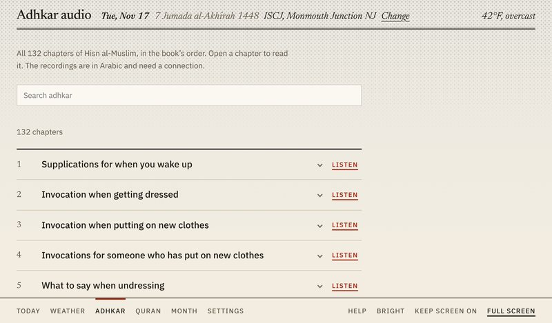
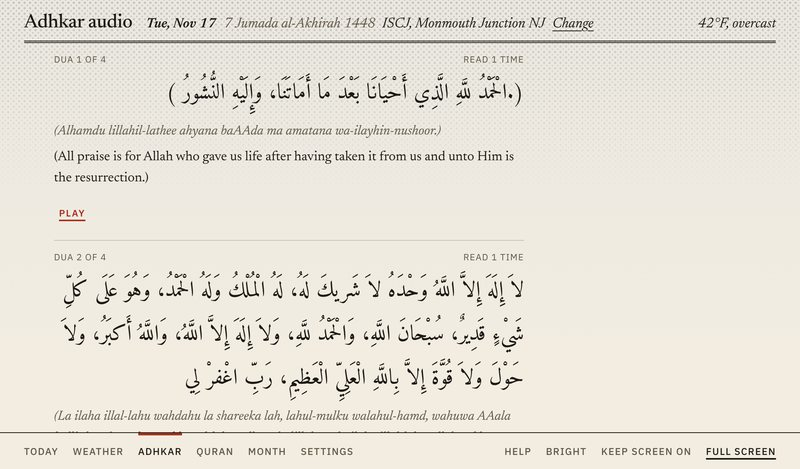
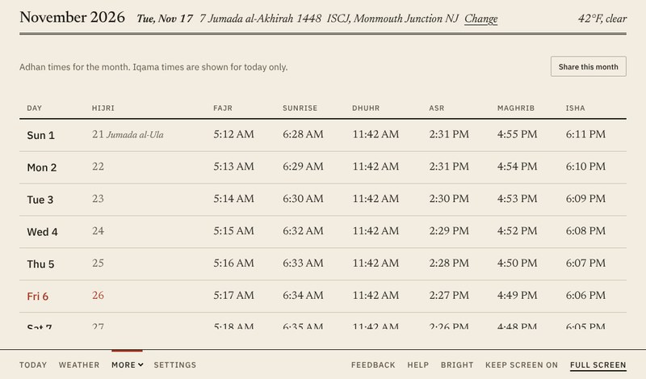

Chapter 8
Adhkar and Month
All 132 chapters of Hisn al-Muslim to read and listen to, and the whole month’s adhan times on one page.
Adhkar


- Search by a word in the chapter’s title, such as sleep or travel.
- Tap a chapter to open it and read its duas.
- Listen plays the whole chapter, recited in Arabic. While it plays it says Stop.


- Which dua of the chapter this is.
- How many times to say it.
- Play recites just this dua.
Month


- To send the whole timetable, tap the paper plane next to your location and choose This month.
- The Hijri date for each day. The month’s name shows where a new Hijri month starts.
- Fridays are in red. Today’s row is marked too.
Good to know
- The Month tab shows adhan times only. Iqama times are on the Today screen.
- Quran, Adhkar and Month are all under More in the row along the bottom. The month also opens from the month’s name at the right end of the sunrise line on the Today screen.
- Adhkar recordings come from hisnmuslim.com and need the internet. The text is kept on this device.